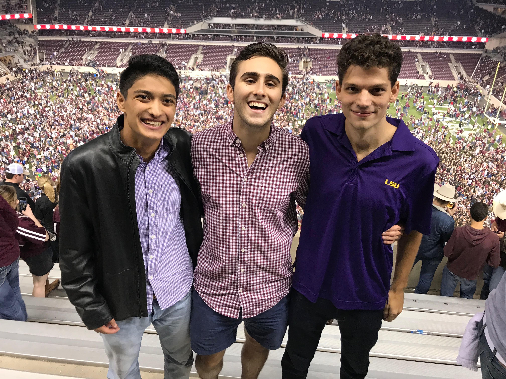

Jack Friedberg's CSCE 445 Home Page

I registered for Computers and New Media because I think it's important to understand the relationship
that people have with media in order to make better products
Media that I use
- Telephone
- Television
- Music
- E-mail
- Social Media
- Twitter
- Instagram
- Facebook